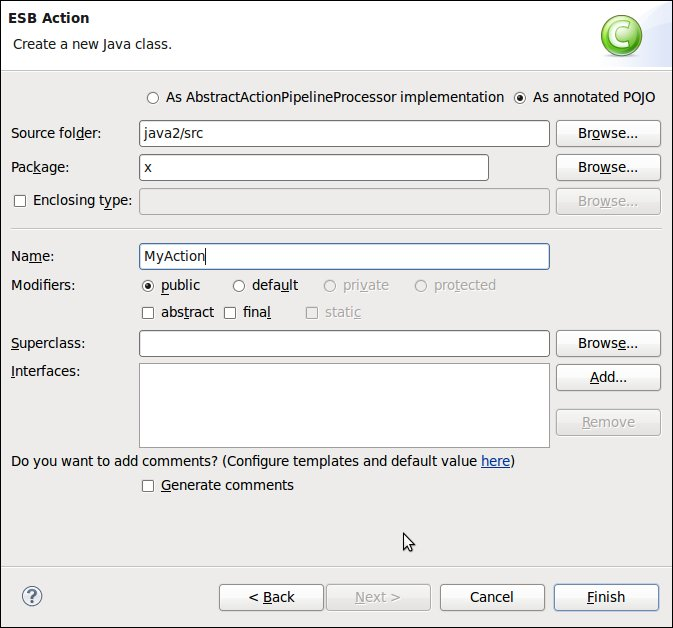
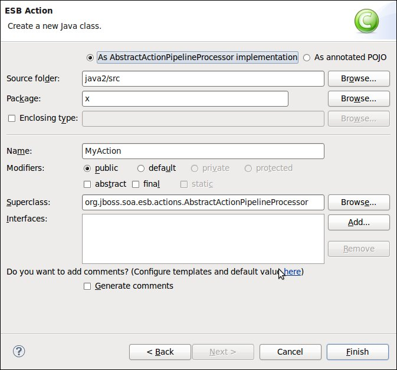
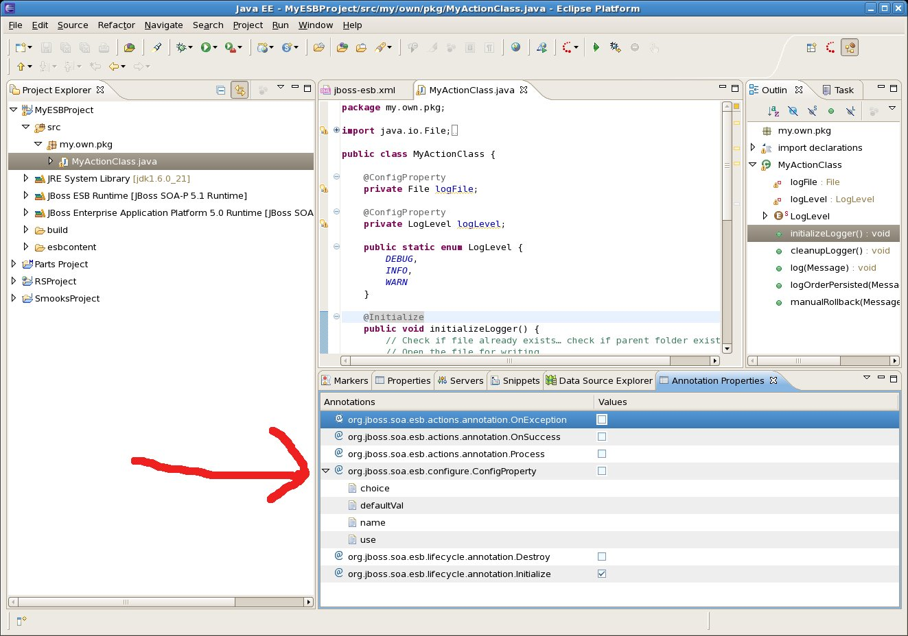

< Main Index Webservice Tools >
Editors |
|
| More ESB 4.9 Support |
Continuing the theme of bringing the tooling in line with ESB 4.9, we added support for ESB Action Annotations... |
|
|
|
| Ability to Select Annotated ESB 4.9 Actions |
When creating the configuration for a new ESB action, you can now create a new Annotated POJO class as well as a class that extends the AbstractActionPipelinedProcessor class.   |
|
|
|
| Added support for using the Annotation Properties view to annotate a POJO as an ESB 4.9 Action |
In addition, there's a new Annotation Properties view in WTP for Eclipse Helios. We've added ESB annotations to the view so you can use it to help annotate a POJO as a new ESB 4.9 Action. For a few additional details, check out this blog post.  |